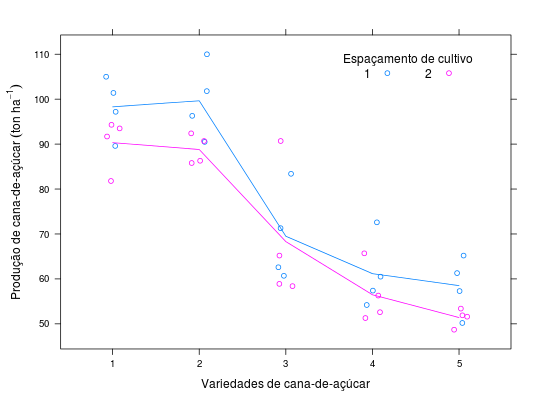

O experimento avaliou o efeito do espaçamento de plantio na produção de variedades de cana-de-açúcar. Para estudar os dois fatores, espaçamento e variedades, considerou-se o delineamento de blocos casualizados com arranjo de tratamentos de parcelas subdivididas com o espaçamento sendo casualizado dentro dos níveis de variedade.
Um data.frame com 40 observações e 4 variáveis, em que
variedespacblocoprodBANZATTO; KRONKA (2013), Quadro 6.2.2, pág. 138.
library(lattice) data(BanzattoQd6.2.2)#> Warning: data set ‘BanzattoQd6.2.2’ not foundstr(BanzattoQd6.2.2)#> 'data.frame': 40 obs. of 4 variables: #> $ varied: Factor w/ 5 levels "1","2","3","4",..: 1 1 2 2 3 3 4 4 5 5 ... #> $ espac : Factor w/ 2 levels "1","2": 1 2 1 2 1 2 1 2 1 2 ... #> $ bloco : Factor w/ 4 levels "1","2","3","4": 1 1 1 1 1 1 1 1 1 1 ... #> $ prod : num 105 94.3 101.8 86.3 83.4 ...ftable(with(BanzattoQd6.2.2, tapply(prod, list(varied = varied, espac = espac, bloco = bloco), FUN = mean)))#> bloco 1 2 3 4 #> varied espac #> 1 1 105.0 101.4 97.2 89.6 #> 2 94.3 91.7 93.5 81.8 #> 2 1 101.8 96.3 110.0 90.5 #> 2 86.3 90.7 92.4 85.8 #> 3 1 83.4 60.7 71.3 62.6 #> 2 90.7 58.4 65.2 58.9 #> 4 1 72.6 54.2 60.5 57.4 #> 2 65.7 56.3 51.3 52.6 #> 5 1 57.3 50.2 61.3 65.2 #> 2 51.6 53.4 51.9 48.7xyplot(prod ~ varied, groups = espac, data = BanzattoQd6.2.2, as.table = TRUE, jitter.x = TRUE, type = c("p", "a"), auto.key = list(title = "Espaçamento de cultivo", cex.title = 1, columns = 2, corner = c(0.85, 0.95)), xlab = "Variedades de cana-de-açúcar", ylab = expression("Produção de cana-de-açúcar"~(ton~ha^{-1})))